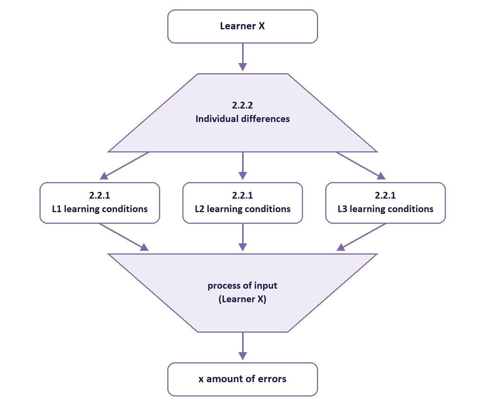
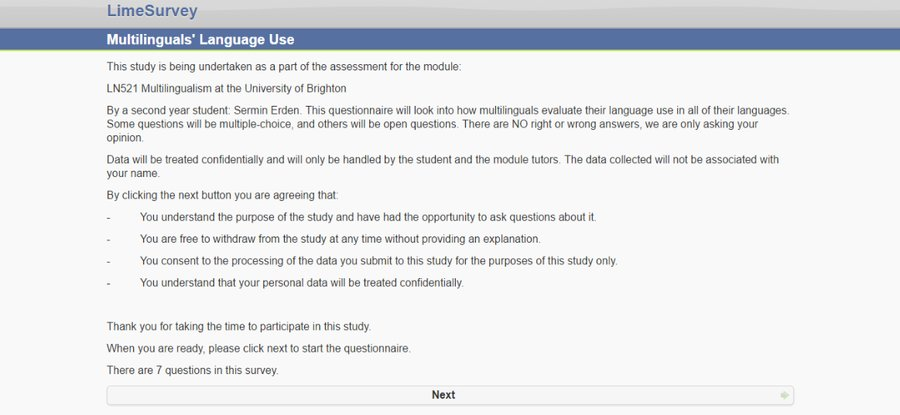

Abstract
Fossilisation is the stable state in which second language learners stop developing towards target norms despite continued input. This paper reviews the developmental causes of fossilisation and the errors made by second language learners, then asks whether similar fossilised errors can occur in native speakers of a first language, supported by an empirical analysis.
Fossilisation is an unfortunate stable state in Second Language (L2) where learners cease their interlanguage development before they reach target norms despite continuing L2 input (Saville-Troike, 2012). For example, ‘how do you call it’ instead of ’what do you call it’. Developmental errors are inaccurate utterances that represent incomplete learning of L2 rules or overgeneralisations, and they are more likely to cause lexical errors rather than grammatical errors (Saville-Troike, 2012). Selinker (1972) established five stages of interlanguage development: Stage 1 is random: The learner is only vaguely aware of the new language system. Stage 2 is emergent: Growing consistency. The learner has begun to discern a system and to internalise certain rules. Unable to correct errors when pointed out. Stage 3 is systematic: There is more consistency, though not all utterances are well-formed. At this stage learners can correct errors that are pointed out. Stage 4 is stabilisation: Few errors and the learner can self-correct, i.e. without feedback. Stage 5 is fossilisation: Also known as ‘the hidden stage’. The learner has reached near-native abilities and somehow cannot self-correct one or two hidden errors. Whether fossilisation is inevitable is a question that has not been answered. What makes this topic interesting is how people cannot seem to correct the simplest errors in their L2 despite being surrounded by L2 input (e.g. living in the L2 country). Another issue to investigate is whether fossilisation can occur in First Language (L1). It is interesting to investigate this matter, as I have experienced these errors first hand. In order to fully frame and answer the question posed, the existing literature and research will be covered in chapter 2. An empirical analysis will be conducted to analyse this problem. To ensure an accurate and fair result, the methodology of any experiment must be considered and carefully planned.
In this chapter the literature review will be discussed. Concepts will be explained in more detail based on literature and other useful sources.
A fossilised error is an error in language that has become a natural part of someone’s speech, and is extremely difficult to get rid of. The focus of fossilisation has always been on the L2 learner, as they usually learn a language consciously (explicit learning) by comparing patterns from their L1. L1 is mostly acquired by implicit learning (finding patterns unconsciously) as humans have no world knowledge when they are born, and the only purpose they have is to learn to communicate. Krashen (1982) proposed five hypothesis including the language acquisition device (LAD) (which supports the innate knowledge of language only children possess, introduced by Noam Chomsky). Children have this astonishing ability to learn any language as their L1, in a time spread of six years. Any child regardless of where it is born or which language it is learning from birth reaches language ‘perfection’ at the age of six, which proves that language does not rely on intelligence, if it did, it would take longer for children with a lower IQ to learn their L1. In addition, bilinguals reach perfect acquisition learning two languages at the same time when they reach the age of six (Cook, 2010). However, fossilisation in L1 speakers has never been researched, because native speakers are assumed to have perfect acquisition. To investigate the possibility of native language fossilised errors, it is important to understand the steps of development in L2 learners, their possible fossilisations, and compare them with the development and possible errors in native speakers. Another interesting angle to investigate is to step into the world of bilinguals/multilinguals that have learned two languages before the age of six, to see whether errors can occur as they have the ability to compare their native languages. To investigate, an empirical analysis will be provided in chapter 3.
There is a logical way of development that every learner goes through, however, there is a difference between learning L1 and L2:
| Step | L1 Acquisition | L2 Acquisition |
|---|---|---|
| 1 | -ing | -ing (making) |
| 2 | Plural –s | Plural –s (dogs) |
| 3 | Possessives –s | Copula –s (It’s good) |
| 4 | Articles | Aux –‘s (He’s going) |
| 5 | Past –ed | Articles (a / the) |
| 6 | 3rd person –s | Irreg. past (he had) |
| 7 | Copula ‘be’ | Past –ed (walked) |
| 8 | Auxiliary ‘be’ (inc. -‘s) | 3rd person –s (he walks) |
| 9 | Possessive –‘s (dog’s bone) |
Table 1 shows the development of the learners in steps, as we can observe L1 learners learn every rule step by step and have more time to learn these steps, whereas, learning an L2 puts the pressure to learn multiple steps at the same time in a shorter period of time. This can be one of the reasons which cause fossilisation.
There are differences between the way a child learns its L1 and the ways adults, or older children, learn a second language L2:
| L1 learning | L2 learning |
|---|---|
| Children tend to pick up language purely through exposure and experimenting with the language. | Adults rarely have access to that much exposure, and practice is usually in the form of controlled classroom-based activities. |
| Parents simplify their speech to children. | Teachers also often do this with students. |
| Children also have a lot of natural language around them | Whereas adults often do not. |
| Children interact with family and friends. | Adults interact with their classmates and the teacher. |
| Children are highly motivated because they want and need to communicate. | Adults have greatly varying amounts and reasons for motivation. |
| Children do nothing but listen for months before speaking. | Many adults benefit from doing the same, but more often this is not an option - adults need to use the language immediately (e.g. at work). |
| Children talk about things in their immediate surroundings. | Adults talk about anything and everything. |
| At first children have very little world knowledge | Adults have a vast amount of world knowledge |
| Children cannot | Adults are capable of abstract thought and can think about and analyse lexis and grammar |
| Children are almost never corrected if mistakes are to do with the form or accuracy, and are only corrected if there is a mistake in meaning/concept. | Teachers generally correct adult learners a lot. |
| Parents constantly praise their children | Teachers vary greatly in the amount of praise given, often giving more attention to errors than on good language use. |
| Children get a lot of individual attention from their parents. | A few adults learners get this in one-to-one classes, but the majority learn in large classes and teacher attention is divided amongst all the students. |
It seems a given as we have seen that L1 learning has a greater guarantee of success than L2 learning, perhaps it is better for the learner to be taught to incorporate any features of L1 learning which might help in overcoming fossilised errors.
This obstacle can be crucial as it involves individual differences between learners, such as: Age, motivation, aptitude, sex, environment, learning styles, learning strategies, time, personality, and education (Zafar and Meenakshi, 2012). According to the research conducted by Zafar and Meenaksi (2012), these factors play a crucial role in the acquisition/ learning of an L2, and seek for awareness that it is not only the learner that needs to be addressed, moreover, the teacher should be skilled and willing enough to help the students by using these differences in their advantage in the process of language acquisition/ learning.

Selinker (1992) argues that when someone achieves an intermediate level of English and still does not say the third person ‘s’ in the present tense, it can be very difficult to correct this error, as the learner has reached stage 3 of the interlanguage development. A crucial error is an error which causes a problem with communication and therefore causes confusion. An example would be using present tense (e.g. I live in Eastbourne) instead of the past (e.g. I lived in Eastbourne) when there is no other indication of time. These errors seem to occur with native speakers, in London, people often use ‘we was going’ instead of ‘we were going’. It is accepted that people in London speak ‘differently’, however, that does not make the sentence that is uttered grammatically correct. When L2 learners make these similar mistakes, they are seen as fossilised errors. Pronunciation errors can be crucial. For example, when someone is looking for a /tʃɪp/ (chip) restaurant when a /tʃiːp/ (cheap) restaurant was intended. Native speakers in different areas of the country have different dialects and are difficult to understand for others that are not from that area, however, it is accepted when native speakers have these errors. A distinction must be made between dialect, accents and fossilised errors. For example, when L2 learners cannot get rid of their accents (e.g. Hungarians often pronounce ‘water’ as ‘vater’) it is seen as an error, whereas native speakers (e.g. the Geordie accent) are not seen as having an error. It can be argued that areas with dialects or accents understand each other in that area, although L2 learners also understand each other even with their errors. This might be human bias into thinking that only L2 learners can have fossilised errors. Altmann (1997) has demonstrated that in order to vocalise certain sounds, they must be heard at an early stage in life. An incidental error is an error which does not cause a problem with communication. For example, missing off third person ‘s’ (e.g. He work very hard) does not usually cause a problem with understanding. Sometimes errors can be quite major but still remain incidental. Native Dutch speakers make the error e.g. ‘Hij wilt trouwen’ instead of ‘Hij wil’ frequently, because the third person always has verb+ t except for the verb ‘willen’, and written possessives remain an obstacle for native speakers (Gheuens, 2010). When native speakers make incidental errors they seem to be accepted as a slip of the tongue, therefore, never get corrected. When a learner reaches near-native proficiency and has one or two errors, it could suggest that they do not get corrected either, as the person understands what is said. Which can cause to stabilise the fossilisation process, and can further solidify the error in the lexicon.
Some are forced to learn a language due to migration (e.g. exogamy, war, work, family, etc.) which involves the effect of Age of Arrival (AoA) for first generation learners. This variable measures the exposure to the target language from the day of arrival in the country. MacWhinney (2009) provides an example that fossilisation also occurs in young migrants even when they reach ‘native-like’ level, and that culture might be inducing these problems. Lenneberg (1967) has shown that there is a ‘cut-off’ point for acquisition, known as the Critical Period. The brain starts specialising in other areas and reduces brain plasticity, which causes difficulties in achieving language acquisition. Lenneberg argues that only children have a limited amount of years to acquire their L1 flawlessly. This concept is commonly extended to SLA by the claim that only children are likely to achieve native or near-native proficiency in L2. Therefore, it is preferred to say Second Language Learning (SSL) after puberty, instead of acquisition. This hypothesis puts a pressure on children that are born in the country of the L2 of their parents. According to the theory, the second generation should not have any difficulties in learning languages as they do use their LAD to learn two languages at the same time. Saville-Troike (2012) argues that any language acquired before the age of six can be considered as the native language, this means that bilinguals that learn two languages before the age of six, should have no fossilised errors, as both languages are their native languages. There are two ways of becoming bilingual before the age of six (Saville-Troike, 2012): Simultaneous Acquisition occurs when a child is raised bilingually from birth. Children learning two languages simultaneously go through the same developmental stages as children learning one language. From the very beginning of language learning, simultaneous bilinguals seem to acquire two separate languages. Early on, they are able to differentiate their two languages and have been shown to switch languages according to whom they are having the conversation with. Sequential Acquisition occurs when a second language is introduced after the first language is well-established (generally after the age of three). Children may experience sequential acquisition if they migrate to a country where a different language is spoken. Sequential learning may also occur if the child exclusively speaks his heritage language at home until he begins school, where instruction is offered in a different language. According to the theory above, bilinguals should speak two languages flawlessly, without any errors. Lieven (1994) introduced a contrasting theory that cross-linguistic and cross-cultural aspects of a child’s directed speech (CDS), and the role of parents have the largest effect upon a child’s language development and that interaction between child and parent is essential for a child’s pragmatic understanding. This might play a big role when first generation learners teach the L2 with their fossilised errors to their children, or the child only develops pragmatic understanding in their L1 and less in their L2. In addition, if parents teach their fossilised errors to their children that might keep those errors alive. In many cases immigrants are forced to be in a lower social-economic status (SES) which can have an influence on their children’s language development. Lee (2002) argues that the influence of SES combined with culture, could have an effect on the language acquisition of a child. That theory supports the fact that governments usually place immigrants in certain areas of cities that exist of other immigrants (Saggar et al., 2012). This simultaneously causes integration problems, factoring the problem that people stay in their comfortable environments and have no reason to interact, and are not forced to have a ‘perfect acquisition’. Cook (1992) distinguished between monolingual and multilingual competence: The subtle differences between the two consistently suggests with multicompetence are not simply two monolinguals, but are a unique combination of two monolinguals (Cook 1992:557). The relationship between the two seem to be crucial, and the unique problem for SLA research is to see how this pre-existing language affects the L2 user’s mind and the L2 user’s community (Cook, 2010). Saville-Troike (2012), argues regarding multilingualism that there could be limitations for language acquisition involving simultaneous bilingualism. It may narrow the result of lexical development in either language, and that intensive use of L2 may reduce accessibility of L1. Psychological perspectives on what is acquired in SLA concentrate on additions or changes that occur in the neurological mapping of how the multilingual brain is organised. This chapter has shown differences in brain organization of individuals which relate possibilities to how proficient people can become in their L2.
An online questionnaire will be used to investigate whether multilinguals have fossilised errors in their languages and what might cause these errors. As shown in section 2.2.3, it is of importance to find participants with similar characteristics to minimise the variables in their language acquisition and the errors they might have. Claims that will be analysed in this empirical task: What do the participants consider to be their L1, and does that have an impact on acquisition? Are there fossilised errors in their L1, and what might have caused it.
The two participants are both born and raised in the Netherlands, Female, within the same age-group, have families that are of Turkish descent, and both are also fluent in their L3 (English). Data was gathered online to ensure that the form of questioning suited the lifestyles and situations of the voluntary participants. A five-minute questionnaire is much more suitable than a one-hour interview, especially when participants reside in a different country and time zone. The participants will be referred to as participant A and participant B. All answers will be discussed in English; all original questions are in appendix 1, and results are in the appendix 2.
The two participants will be presented information about the study and by clicking next they agree to volunteer freely to this experiment (see figure 1).

All the original answers provided by the participants are available in Appendix 2.
| Participant | Gender | Age | Country of Birth | Birth Country of the Parents |
|---|---|---|---|---|
| A | Female | 34 | The Netherlands | Mother: Turkey, Father: The Netherlands. Mother arrived before puberty |
| B | Female | 33 | The Netherlands | Turkey and both arrived after puberty |
Figure 2 shows that both participants are the same gender, around the same age, and both were born in the Netherlands. The only difference is the level of Dutch the parents might have spoken to the participants. The mother of participant A had the AoA of 8, before the CPH, which implies she had to learn the language by going to school before the decrease in her brain plasticity. The father spoke only Dutch. Therefore, participant A was surrounded by both languages growing up. The parents of participant B seem to have AoA after the CPH, and the proficiency of their L2 is therefore questionable.
| Participant | What language is considered to be the first, second, and third language | Proficiency of L1 and the age it was acquired | Proficiency of L2 and the age it was acquired | Proficiency of L3 and the age it was acquired |
|---|---|---|---|---|
| A | L1 Turkish, L2 Dutch, L3 English | Native, from birth | Native, from birth | Fluent, age 6 |
| B | L1 Turkish, L2 Dutch, L3 English | Native, from birth | Native, age 4 | Fluent, age 11 |
In figure 3, both participants seem to agree that their L1 is Turkish, L2 is Dutch, and L3 is English. However, they seem to vary in age of acquisition / learning their L2 and L3.
| Participant | Home | Other family members | Primary school | Secondary school | College/ University | Friends | Work | Other |
|---|---|---|---|---|---|---|---|---|
| A | Mix, Dutch was the more dominant language | Mix, Turkish was more dominant. | Dutch/ English | Dutch/ English | Dutch/ English | Mix of L1, L2, L3. Dutch friends: only Dutch. English friends: only English | Dutch in the Netherlands. English in other countries. | English while traveling |
| B | Turkish only | Turkish only | Dutch only | Dutch/ English | Dutch/ English | Dutch friends: Dutch. Turkish friends: a mix of Turkish and Dutch | Dutch |
In figure 4, the difference in language use between the participants becomes more apparent. Participant B seems to have a separate language use in different situations, whereas, participant A shows a more diverse use of language.
| Participant | L1 | L2 | L3 |
|---|---|---|---|
| A | Pronunciation error of the word ‘temi’ (meaning: isn’t that right?). Instead, the word ‘demi’ is used, which sounds like a different word. | Mixing the meanings of the words ‘dit’ (this) and ‘deze’ (these). However, do not make that mistake in English | ‘How’ do you call it instead of ‘what do you call it’ |
| B | Pronunciation error of the word ‘dikat’ (be careful). Instead, the word ‘tikat’ is used. Not sure of having other errors. | No errors in L2 | ‘Make’ a picture instead of ‘take a picture’. Literal translation occurs from time to time. |
Figure 5 shows the errors that the participants are aware of, and not seem to be able to correct. Participant B seems to have errors in the least used languages, whereas, participant A shows errors in all languages.
The two participants have two languages as their native language according to the evidence provided in chapter 2. Both have acquired their L1 and L2 before the age of six. However, there is clear evidence to say participant A has reached Simultaneous Acquisition, and participant B Sequential Acquisition. Participant B was exposed to Turkish until the age of four and started learning Dutch from the age of four in reception. Participant B spoke only Turkish at home with her parents and Dutch in school. Participant A was forced to adapt to which language was spoken or had to code-mix. Dutch was the most dominant language in terms of exposure in both participants’ lives. According to the background research and these results, both participants should have reached ‘perfect’ acquisition, and therefore should have no errors in their Turkish nor Dutch. However, only participant B demonstrates no errors in her Dutch. This could be due to the fact that participant B learnt one language first and then started learning another language. As a child, participant B had 2 separate lives in two separate languages. Turkish was only spoken at home and with family, however, the language never received the structure in school to fill possible gaps that could not have been provided by the parents. By contrast, school and university (which focusses on language accuracy) provided the teaching and framework with which to learn Dutch correctly and this may be the cause of her reaching ‘perfect’ acquisition in Dutch but not Turkish. Participant A was raised hearing and practising two languages at the same time, and shows more code-mixing compared to participant B. It could be that the SES, CDS, or the environment in which the participant was raised, may have caused interference to reach ‘perfect’ acquisition. The effect of other actors in this environment cannot be understated. When other speakers present their own fossilised errors, the participant will naturally learn those errors and assume that these are, in fact, the correct way of using the language. This suggests that fossilised errors can be transferred within groups and even between generations. These results show that sequential acquisition seems to have an errorless acquisition for the dominant native language and may have reduced the accessibility of the L1, whereas the evidence in chapter 2 showed that would only occur in simultaneous acquisition. The results show that simultaneous acquisition has some inefficiencies and has fossilised errors in all languages. Future Research This study group only focussed on bilingual speakers. The main group that still require research are native monolingual speakers. Can the errors that monolinguals make be classified as fossilised errors or are they a natural function of dialect? Can bilinguals actually be called a unique combination of two monolinguals? In addition, the sample size was extremely small and thus any repeat of this study would benefit from a larger sample size.
The ability to use a language requires complex cognitive knowledge and skills that are innately available to everyone when they acquire L1 as a child. However, the ability to reach the same level of competence in L2 requires different variables in every individual. The background research showed that fossilisation occurs for a variety of reasons: L2 learners compact the learning cycle, this may cause the learner not to take the right amount of time to go through the developmental stages. Environmental factors (e.g. different languages based on environment – home, neighbourhood, school). Age of Arrival in L2 country L1 interference (e.g. direct translation from L1). Individual differences. The results of the empirical analysis (considering the small sample size) show that: Sequential acquisition is errorless for the dominant language. Simultaneous acquisition creates fossilised errors and that many different factors can cause these errors. Fossilised errors also exist in native bilingual speakers. As one can imagine, debates about the possible causes of fossilisation are far from over and they remain a powerful inspiration for new research.
Aitchison, J. (2012) Words in the Mind. Hoboken: John Wiley & Sons Press.
Altmann, G. T. M. (1997) The Ascent of Babel. Oxford: Oxford University Press.
Anooshian, L. J. and Hertel, P. T. (1994) 'Emotionality in free recall: Language specificity in bilingual memory', Cognition & Emotion, 8 (6): 503–514.
Aycicegi-Dinn, A. and Caldwell-Harris, C. L. (2009) 'Emotion-memory effects in bilingual speakers: A levels-of-processing approach', Bilingualism: Language and Cognition, 12 (03): 291.
Cook, V. J. (1992) 'Evidence for multicompetence', Language Learning, 42 (4): 557–591.
Cook, V. J. and Bassetti, B. (2010) Language and bilingual cognition, New York: Psychology Press.
Gheuens, K. (2010) ‘De spelling voorbij: Een onderzoek naar het hedendaagse gebruik van spelling bij Vlaamse en Nederlandse jongeren in formele en informele contexten. Available from: http://taalunieversum.org/sites/tuv/files/downloads/koen_gheuens_de_spelling_voorbij_2010.pdf. Accessed: 26 May 2016.
Krashen, S. (1982) Principles and practice in second language acquisition. Oxford: Pergamon Press.
Lee, V.E. (2002) Inequality at the starting gate: Social background differences in achievement as children begin school. Washington, D.C: Economic Policy Institute.
Lenneberg, E. H. (1967) Biological foundations of language. New York: Wiley.
Levelt, W.J.M. (2013) A History of Psycholinguistics: The Pre-Chomskyan Era. Oxford: Oxford University Press.
Lieven, E.V.M. (1994) ‘Input and interaction in language acquisition’ Crosslinguistic and cross cultural aspects of language addressed to children. C.Gallaway & B. J. Richards (ed.): pp. 74-106.
Saggar, S., Somerville, W., Ford, R. and Sobolewska, M. (2012), The impacts of migration on social cohesion and integration. From: https://www.gov.uk/government/uploads/system/uploads/attachment_data/file/257237/social-cohesion-integration.pdf. Accessed: 26 May 2016.
Saville-Troike, M. (2012). Introducing second language acquisition. 2nd Ed. Cambridge, Cambridge University Press.
Selinker, L. (1972) 'Interlanguage', IRAL, 10 (1-4): 209–231.
Selinker, L. (1992) Rediscovering interlanguage. London: Longman.
Zafar, S. and Meenakshi, K. (2012) 'Individual Learner differences and Second language acquisition: A review', Journal of Language Teaching and Research, Vol. 3, No. 4, pp. 639-646.
The appendices shall be sent to the lectures via email.